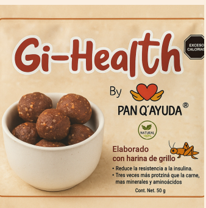
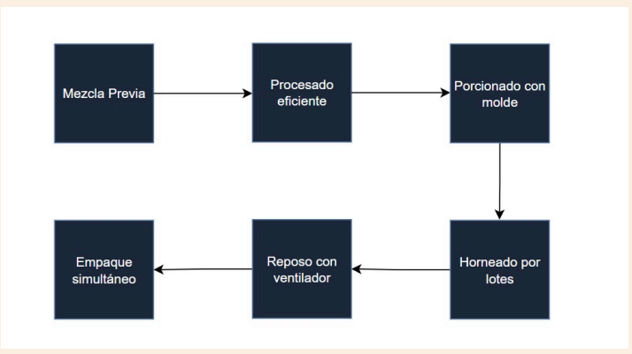
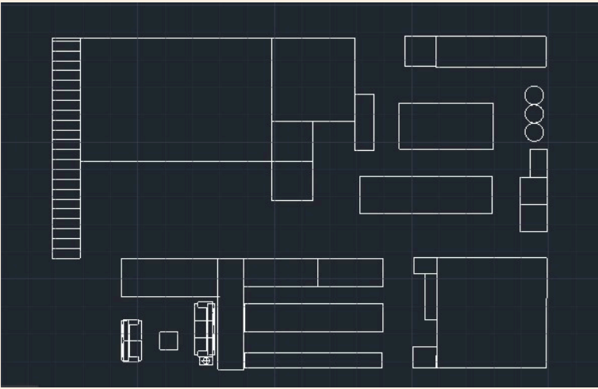
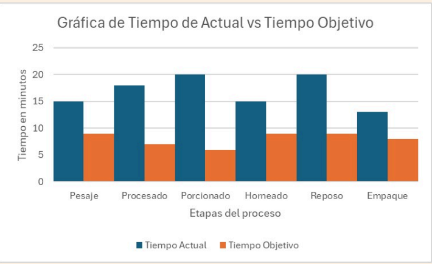

Proyecto universitario de mejora continua – UAQ, 2025
PAN Q'AYUDA
Optimización productiva con enfoque humano mediante la metodología 5S

¿Quiénes son?
Cooperativa de pastelería gourmet en San Pablo, Querétaro, con sentido social, integrada por personas con discapacidad, adultos mayores y madres jefas de familia.
Metodología 5S aplicada
Clasificación
Actividades
- Etiquetar utensilios
- Eliminar ingredientes vencidos
- Verificar caducidad en refrigeración
- Actualizar recetas
Beneficios clave
- Reducción de tiempos muertos
- Flujo de trabajo ágil
- Aceleración de pedidos
Orden
Actividades
- Etiquetar estantes y recipientes
- Asignar lugar a utensilios
- Etiquetas con fechas
- Delimitar zonas
Beneficios clave
- Menos tiempo buscando materiales
- Flujo continuo
- Fácil adaptación de nuevos operarios
Procesos: actual vs propuesto
Proceso actual

Proceso propuesto

Flujo de producción propuesto

Layouts: actual y propuesto
Layout actual
Layout propuesto

Resultados esperados


Mi rol
Responsabilidades
- Análisis de procesos
- Rediseño de layout
- Propuesta e implementación de 5S
Resultados esperados
- Reducción de tiempos
- Flujo de producción estable
- Base para crecimiento